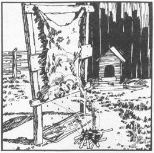
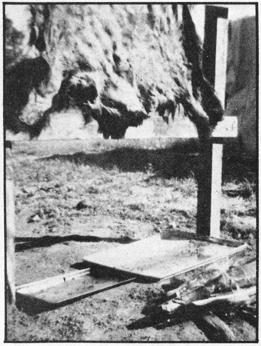

Every rural carnivore knows that home-raised rabbits, goats, sheep, and such-plus whatever wild animals may be trapped or hunted locally-can provide the family table with rich and nutritious food at far less than the cost of store-bought meat. Nevertheless, I've known many such people who passed up the opportunity offered by those same creatures' skins.
That's unfortunate, since hides and pelts are just as valuable as the meat they protect land possibly more so). Well-tanned skins can be fashioned into warm, appealing clothing for only a fraction of what you'd pay in the stores . . . and natural rugs, furniture covers, large floor pillows, and bedspreads add a special decorative touch that seems to blend with nearly any style of home furnishings.
I've often asked acquaintances why they never made use of hides, and got answers that varied from lack of knowledge or time to cost of tools and supplies. "Humbug!" I respond. "I've been tanning for just 18 months now and it's really very simple. Besides, it's quite a satisfying thing to do . . . and you can even make a little money from it if you like." Then I go on to describe my system, and usually end up persuading my cautious friends to give it a try (maybe with a little help from me the first time or so). I hope I can persuade you, too.
The following is the tanning method I use, laid out in 10 easy-to-follow steps with one optional procedure thrown in for good measure.
[1] First, build a rack as shown in the illustrations with this article. We made ours of green alder limbs about 3 inches in diameter: two 8-footers for legs, and seven poles about 5 feet long for the crosspieces.
Construction of the framework is simple. Just lay out the legs on the ground, mark off 3 feet from one end (which will be the bottom), and secure a crosspiece to each support at that point. Then add another horizontal pole every 7 inches (a spacing which makes the rack suitable for skins of all sizes).
When you're finished, dig a hole about 2 feet deep for each leg, set the uprights in the ground, and bury them so that they're good and solid. I fill the holes about three-quarters of the way with concrete for added stability, but a simple brace will do just as well.
[2] Most tanners use flesh knives or hunting knives to scrape flesh, fat, and excess blood off the hides they work. This method of cleaning skins has caused me many tears, since I usually end up taking off either too much or not enough. Most often, in fact, I've put holes in the pelts. Which is very discouraging.
Well, good news: That scraping isn't necessary at all. Instead, I simply melt off the guck that clings to the skin . . . and here's how:
First I carefully tack the hide-stretched well-to the rack on the side of the framework that faces the wind (the hair must lie with, not against, whatever breeze is blowing). I then place a large commercial cookie sheet under the skin to catch the drippings, and build a small fire on the windward side of the structure about 3 feet from its legs. Location of the heat source is important: too close and the pelt may dry out or even catch fire (I once lost a deer hide this way) . . . too far away and the job will never get done.
Be warned that this is a time-consuming procedure. I've spent as long as eight hours-one windless day when I was working on a bear hide-waiting for the fat to drip off. Make sure you have plenty to do (chopping wood, maybe, or reading back issues of MOTHER) . . . but don't get so involved that you forget to keep an eye on the situation. Should the droppings catch fire-and one wild spark can do the trick-you'll quickly learn that fat makes a really nasty blaze. If the flames aren't smothered immediately, you may lose the skin.
[3] When you've decided that all the fat is off, prepare Solution No. 1, which consists of a pound of salt dissolved in each gallon of water you use. (I make 5 gallons of this for small animals and 20 for the larger ones.) Soak the pelt thoroughly in the liquid for about five hours.
[4] Wring the skin carefully to remove the brine, lay it on a flat surface flesh side up, and cover the pelt with plenty of salt. Gently but firmly rub the preservative into every pore. Then fold the hide in half (salted side in), roll it into a bundle, and let it cure overnight.
[5] The next day, thoroughly rinse the skin to free it of salt and hang it in a shady spot to dry.
[6] Next, tan the hide in Solution No. 2, which is made as follows: Dissolve 1 pound of alum in 1 gallon of hot water. In another container, dissolve 2-1/2 pounds of salt in 5 gallons of water. When both solutions are ready, mix them together thoroughly and let the skin soak in the liquid for three days. Stir the tanning fluid three times daily.
[7] Wring the hide carefully and thoroughly and rinse it with cold water for about 20 minutes.
[8] Hang the skin up to dry in a shady spot.
[9] After the pelt is completely dry, dampen it again and tenderly but firmly stretch it in all directions.
[10] With your knuckles or palms, knead and rub warm lard or butter into the skin. (The Indians used a mixture of animal brains, liver, fats, and vegetable broths.) Then fold the hide in half (hair to hair) and twist it back and forth between your hands. This step softens the pelt so that it can be turned into a usable product.
[11] (Optional.) The Indians dampened their finished skins, smoked them over green hardwood to waterproof them, and then dried them quickly. I've used this method just once, with results that pleased me.
What you do with the hide from here on is up to you. We find uses of our own for most of our home tannery's output . . . and also make periodic trips to local flea markets and craft shows to sell handbags, coats, floor pillows, hats, and other craft products.
Incidentally, don't throw away the drippings left in the pan when the fat is melted away from the skin. They're a darn good substitute for that expensive boot grease the stores sell to preserve our heavily used and abused footwear . . . and the renderings can also be used to make homemade soap by the process explained in MOTHER NO. 13:
How to Make Soap
Soap Making in the Bush
Makin' Soap on the Homestead
General Notes on Soapmaking and Recipes
Matter of fact, very little of an animal need be wasted. For example, we save any bones that are large enough, dry them out, and make pipes and rings (excellent items to sell at craft outlets).
That's it! We've tried several methods of tanning, and have passed on this one-a combination of several processes-because we've found it the easiest and most effective. We hope it helps some of you. Good luck, and may you be blessed with many fine skins!
|
 |
 |
|